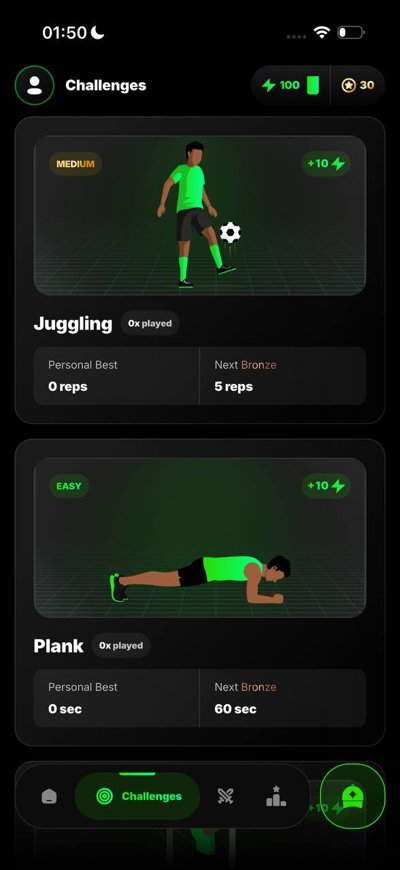
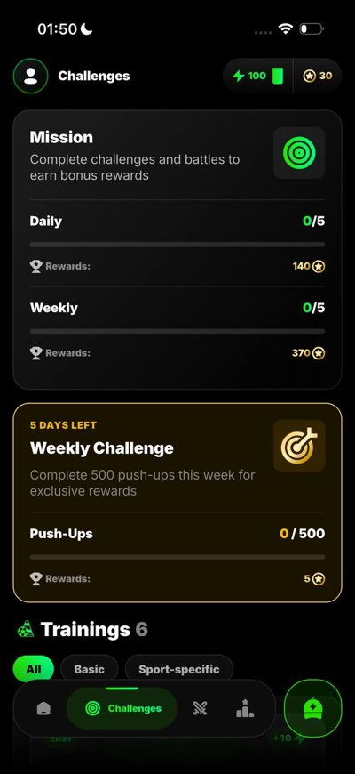
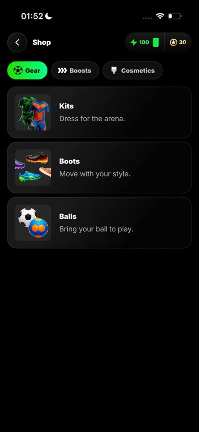
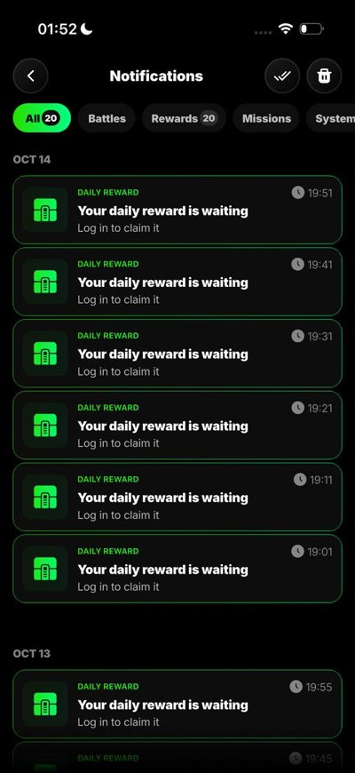

Портфолио · ProveUp
май – сент. 2026 · iOS и Android · TestFlightФитнес-батлы и фристайл · computer vision с камеры · видеосвязь на LiveKit · аватары и экипировка · рейтинги








Сканер документов и PDF-редактор
сент. – окт. 2026 · iOS и Android


Подключился к проекту, застрявшему перед релизом, и за 1,5 месяца довёл его до релиза в обоих сторах.
- Доработал камеру на нативных SDK iOS и Android: документ, ID, паспорт, QR, книга
- ML и OCR на устройстве, без своего бэкенда: ONNX Runtime, OpenCV, Tesseract
- Подписки RevenueCat: PRO-функции, paywall, доступ для ревью Apple
- Профилирование в DevTools: ML в isolate, прогрев моделей, камера без подтормаживаний
- Внедрил Crashlytics и Adjust; дорабатывал PDF-модуль: подписи, экспорт, папки под PIN